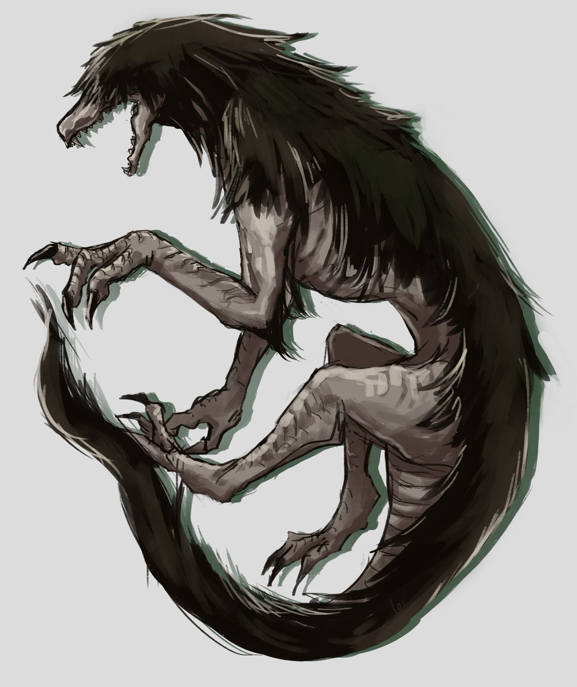

В старом добром 2007 году на /x/1 было интересно, было полно возможностей напугать себя до потери сна. Например, пыльные крипипасты, которые и вправду пугали, а не заставляли думать, кого они вообще пугать должны. Летом того же года одна вещь, задуманная как ничем не примечательная страшилка, произвела настоящий фурор. SCP-173, "Скульптура". Всё началось с SCP-173. Это была обычная одноразовая крипипаста, неожиданно вдохновившая многих людей. Быстро начали появляться другие записи, и вскоре была создана первая вики, чтобы весь материал не был в конечном счёте потерян. В то время /х/ был ещё довольно молод, и ерунда вроде The Holders, Ted the Caver или Treedog2 ещё не успела устареть и выйти из моды. - DrGears Появление SCP-173 действительно было чем-то выдающимся для /x/. Вместо обычного рассказа с резкой и пугающей кульминацией или истории, вызывающей отвращение и ужас, получилось нечто, заставлявшее вас задуматься и пробуждавшее благодаря этому страх. Можно представить, что чувствовали читатели, впервые натыкаясь на этот тред. Скульптура была популярна. Исходный тред держался несколько дней благодаря тому, что многих прочитавших поразила пугающая сторона написанного и неявный намёк на то, что где-то есть ещё много подобных объектов. Но в то время, как одни думали о том, что могло быть там, другие стремились получить свой кусочек пирога SCP. Их первые записи стали тем, что позднее получило известность как "Объекты SCP".
Scp-682
SCP-682 необходимо уничтожить как можно скорее. На данный момент у групп SCP нет средств уничтожить SCP-682, есть только возможность нанести ему огромный физический ущерб. SCP-682 следует содержать в помещении размером 5x5x5 м, покрытом изнутри усиленными пластинами из кислотоупорной стали толщиной 25,4 см. Помещение должно быть заполнено соляной кислотой до тех пор, пока SCP-682 не будет полностью погружен в кислоту и обездвижен. Любые попытки SCP-682 пошевелиться, заговорить или выйти из-под стражи должны быть пресечены. Персоналу запрещается разговаривать с SCP-682, чтобы объект не ожесточился. Сотрудники, не имеющие соответствующего разрешения и пытающиеся общаться с SCP-682, будут принудительно удалены.
}